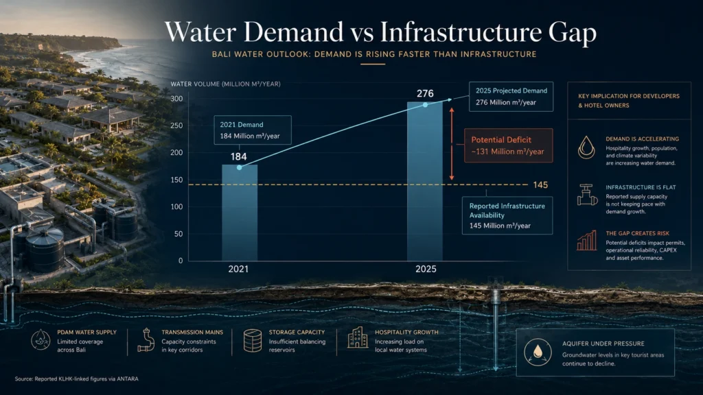
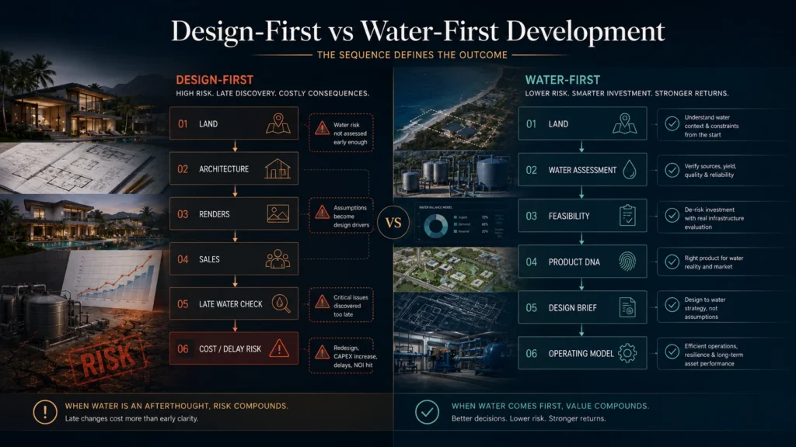
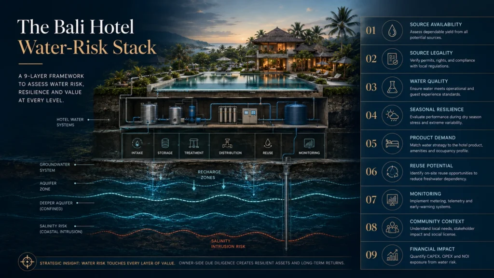
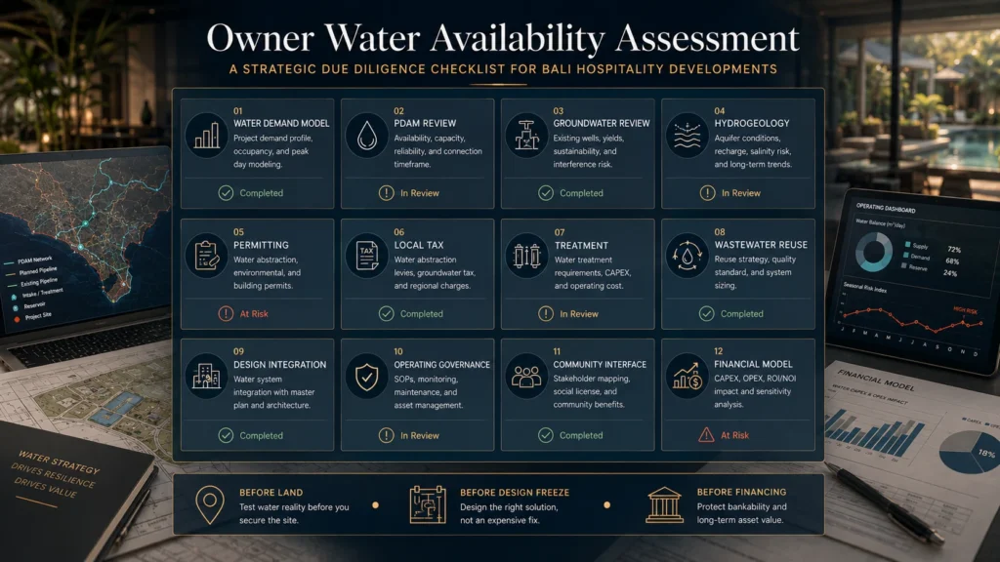

Bali water shortage hotels are not a tourist headline. They are an owner-side development issue: hotels, villas, wellness retreats, branded residences, and mixed-use hospitality assets in Bali are becoming more exposed to water availability, groundwater regulation, operating-continuity risk, and long-term asset-value pressure.
The next major Bali hotel development risk is not only land price, zoning, licensing, or operator selection. It is water.
A hospitality project can be beautifully designed, commercially positioned, and legally structured - but still become operationally exposed if its water assumptions fail after opening. For owners, developers, investors, architects, and operators, Bali’s water shortage is no longer a sustainability footnote. It is a feasibility, CAPEX, compliance, operating, and asset-value issue.
At Zenith Hospitality Global, we see water availability as part of the same owner-side discipline as concept validation, operating model design, CAPEX logic, pre-opening governance, and commercial feasibility. If a Bali hotel project cannot prove that its full guest promise can operate on reliable, legal, and financially sensible water sources, the feasibility study is incomplete.
Key Takeaways
- Bali water shortage hotels are now a feasibility issue. Reported KLHK-linked data shows Bali water demand rising from 5,951.92 liters per second in 2021 to 7,991.29 liters per second in 2025, while infrastructure availability was reported at 6,939.38 liters per second, according to ANTARA News.
- Tourism is a structural demand driver. Academic research in the Indonesian Journal of Limnology found that tourism-related water demand in Bali increased by 20.8 million cubic meters, or 295%, from 1988 to 2013, with most of the increase concentrated in Badung Regency.
- Private wells are not a simple fallback. Business groundwater use sits inside a formal permit, approval, reporting, and supervision framework under Indonesian groundwater regulation.
- Water must be assessed before design freeze. The right question is not only whether water can be supplied, but whether the project’s water balance, guest promise, landscaping, pools, wellness uses, laundry, F&B, and irrigation model are commercially and operationally sustainable.
- Owners should treat water availability as part of the investment thesis. A site without verified water reliability can carry hidden NOI risk, delayed-opening risk, regulatory risk, and community-license risk.

Why Bali Water Shortage Hotels Matter Now
Bali water shortage hotels matter because hotels, villas, wellness retreats, and mixed-use hospitality assets are high-intensity water users operating on an island where public supply, groundwater, land conversion, and tourism growth are under increasing pressure.
This is not only an environmental issue. It is a development and investment issue.
Reported KLHK-linked data cited by ANTARA News shows Bali’s water demand at 5,951.92 liters per second in 2021, projected to reach 7,991.29 liters per second by 2025. The same report cited infrastructure availability of 6,939.38 liters per second, creating a potential deficit if supply infrastructure is not expanded.
For a hotel owner or developer, this changes the meaning of feasibility. A project is not feasible only because there is land, demand, architecture, financing, and a projected ADR. It also needs a credible answer to a basic operating question:
Can this asset operate its full guest promise on this site, at target occupancy, with legal, reliable, affordable, and socially defensible water sources?
If the answer is not proven, the project carries hidden operating risk.
For related owner-side feasibility logic, see Zenith’s article on why many hotel feasibility studies are wrong.
The Core Problem: Water Is Being Treated Too Late
Many Bali hospitality projects still begin with land, architecture, renders, room count, villa density, pool design, and sales positioning. Water is often pushed into the engineering phase after the concept has already been emotionally, visually, and commercially sold.
That sequence is backwards.
A luxury boutique hotel, villa resort, wellness retreat, branded residence, or mixed-use hospitality asset is a water-consuming operating system. Every design and product decision changes water demand:
- number of rooms, villas, and bathrooms;
- pool volume and evaporation exposure;
- landscaping and irrigation strategy;
- restaurant seats and kitchen operation;
- laundry model;
- spa and wellness wet areas;
- ice baths, plunge pools, steam rooms, saunas, and recovery circuits;
- staff facilities;
- back-of-house cleaning;
- firefighting reserves;
- water features and guest-facing landscape theatre.

In a mature feasibility process, these inputs should be tested before the project moves too far into design development. A proper hotel feasibility study in Bali should test water availability, not leave it as a late-stage technical assumption.
What Most Bali Water Shortage Hotels Get Wrong
1. They confuse water access with water reliability
A site may have a connection point, tanker access, or an existing well. That does not prove operational reliability.
A hospitality asset needs water under real operating conditions: peak occupancy, dry season, high laundry loads, full F&B service, spa operations, pool topping, irrigation demand, and emergency reserves.
A basic “there is water” answer is not enough.
The correct owner-side question is more precise:
How much water can this site reliably access, from which sources, at what quality, under what permit status, at what cost, during peak operating conditions?
2. They treat groundwater as free infrastructure
Groundwater is not free infrastructure. It is a regulated resource, and in stressed areas it is also a community-sensitive resource.
Indonesia’s 2026 ESDM groundwater regulation distinguishes business groundwater use from non-business groundwater use and sets out permit, approval, reporting, supervision, and sanction mechanisms. Owners should review the applicable groundwater permit pathway through qualified legal and technical advisers before assuming that a hotel, villa resort, restaurant, or wellness asset can simply drill and extract.
The regulation is available through the official ESDM legal documentation portal: Peraturan Menteri ESDM No. 4 Tahun 2026.
3. They model ADR and NOI without modeling water risk
A high-ADR hospitality asset is operationally fragile if the back-of-house infrastructure is weak.
Water shortage or water-quality failure can affect:
- guest satisfaction;
- landscape quality;
- spa and wellness reliability;
- pool operations;
- laundry cost;
- maintenance cost;
- filtration and treatment cost;
- emergency tanker dependency;
- energy use;
- staff workload;
- reputation;
- operator credibility;
- asset valuation.
This does not mean every Bali project is unviable. It means Bali water shortage hotels must be priced, designed, and governed before the investment thesis is treated as stable.
For a broader view on owner-side risk control, see Zenith’s article on the role of a Bali hotel owner’s representative.
4. They underestimate local tax and compliance exposure
Groundwater use may trigger local tax obligations. In Denpasar, for example, the local regulation defines Pajak Air Tanah as a tax on groundwater extraction and/or use, sets the taxable basis as the groundwater acquisition value, and applies a 20% PAT tariff under the relevant local regulation.
Owners can review the regulation via JDIH Denpasar.
This should not be generalized blindly across Bali. Each regency or city may have its own applicable rules, tax calculation basis, procedures, and enforcement practice. The commercial model should verify local tax exposure for the exact project location.
The Zenith View: Water Belongs Inside Feasibility
The operator-first view is simple: water is not a utility line item. It is a product-operating constraint.
A Bali hotel feasibility study should not only test demand, ADR, occupancy, CAPEX, RevPAR, GOP, NOI, and operator fit. It should also test whether the proposed hospitality product can actually operate on the site’s available water sources.
For Zenith, Bali water shortage hotels sit inside owner-side feasibility because water affects the guest promise, spatial logic, operating model, compliance pathway, and financial model.
| Area | Why It Matters |
|---|---|
| Product DNA | Can the guest promise be delivered without excessive water intensity? |
| Space logic | Are pools, water features, spa wet areas, gardens, and laundry assumptions aligned with real water capacity? |
| CAPEX | Are rainwater harvesting, greywater reuse, wastewater treatment, storage, meters, filtration, and backup systems included early? |
| Pre-opening readiness | Are permits, source testing, supplier contracts, monitoring systems, and SOPs in place before opening? |
| Operating model | Who monitors consumption, leaks, water quality, source performance, and contingency triggers? |
| Commercial performance | How does water risk affect cost, reputation, guest satisfaction, insurance, financing, and exit value? |
Generic sustainability advice says: install low-flow fixtures.
Owner-side hospitality advice says: build a complete water-risk model before you freeze the project.
This is also why water risk should be connected to Bali hotel pre-opening strategy, not left until the final months before launch.
The Water-Risk Stack for Bali Hospitality Projects
Every Bali hospitality project should be tested through a practical water-risk stack.

| Risk Layer | What To Check | Why It Matters |
|---|---|---|
| Source availability | PDAM, well, rainwater, tanker, recycled water, desalination if relevant | Determines whether the project can operate reliably |
| Source legality | Groundwater permit, approval pathway, reporting duties, tax registration | Determines compliance exposure |
| Source quality | TDS, chloride, microbiology, hardness, pollutants | Determines treatment cost and guest safety |
| Seasonal resilience | Dry-season yield, peak demand, recharge rate | Determines operating continuity |
| Product demand | Rooms, villas, pools, spa, wellness, F&B, laundry, irrigation | Determines true daily water requirement |
| Reuse potential | STP, MBR, greywater, treated effluent, irrigation reuse | Reduces extraction and operating risk |
| Monitoring | Submetering, leak detection, dashboards, SOPs | Controls consumption after opening |
| Community context | Subak, desa adat, nearby wells, local supply pressure | Protects license to operate |
| Financial impact | CAPEX, OPEX, taxes, maintenance, tanker backup, replacement reserves | Protects NOI and valuation |
This framework should be completed before the project is represented to investors as commercially stable.
Operational Implications for Bali Water Shortage Hotels
Water needs an operating owner
A water system cannot be left only to engineers. After opening, it needs operational ownership.
The hotel team must know:
- daily water consumption by zone;
- source mix by day and month;
- PDAM versus well versus recycled water usage;
- tanker dependency;
- leak incidents;
- water quality test results;
- irrigation demand;
- pool and spa consumption;
- laundry water intensity;
- emergency reserve levels.
This requires SOPs, reporting lines, meters, dashboards, maintenance routines, and escalation rules.
A hotel that does not monitor water properly is not managing water risk. It is only discovering water risk when something breaks.
Wellness and luxury concepts need extra scrutiny
Wellness hospitality can be especially water-intensive if poorly designed.
Hydrotherapy, plunge pools, steam rooms, sauna circuits, recovery pools, spa wet rooms, ice baths, high-touch laundry, and lush landscaping can materially increase water demand.
The question is not whether these facilities are attractive. The question is whether the site can support them without creating operational, regulatory, or community risk.
This is especially relevant for wellness and longevity projects in Bali. For more on regulated wellness boundaries, see Zenith’s article on Bali wellness resort compliance.
Reuse systems should be designed early
Water reuse is not theoretical in Bali.
A study on water reclamation and reuse potential in Bali Province notes the province’s water-shortage and groundwater-over-abstraction context and assesses reuse potential.
Raffles Bali provides a useful operating example. Accor reports that the resort’s system returns 97% of water to the land, with only 3% lost to evaporation, through an integrated water-management approach. See Accor’s case note: Pioneering Water Self-Sufficiency at Raffles Bali.
The lesson is not that every owner should copy one resort. The lesson is that water stewardship must be designed into the asset early, not improvised after opening.
Commercial Implications of Bali Water Shortage Hotels
Bali water shortage hotels can change the economics of a hospitality asset because water risk affects both upfront capital and recurring operating performance.
| Commercial Area | Potential Impact |
|---|---|
| CAPEX | Higher upfront cost for storage, treatment, MBR/STP, filtration, submetering, rainwater systems, dual plumbing, irrigation reuse |
| OPEX | Higher cost from pumping, filtration media, treatment chemicals, lab testing, maintenance, energy, outsourced laundry, or tankers |
| NOI | Margin compression if water cost and contingency operations are not modeled |
| Opening timeline | Delay risk if permits, wells, water quality, or treatment systems are not ready |
| Guest experience | Pressure issues, restricted water features, poor landscaping, spa disruption, laundry failures |
| Reputation | Negative reviews, community criticism, ESG concerns, investor scrutiny |
| Asset value | Lower buyer confidence if water source, permit status, and operating controls are weak |
| Financing | More lender questions around environmental and operating resilience |
A water-risk assessment will not remove every risk. But it allows the owner to price, design, mitigate, and govern the risk before it becomes operational failure.
This is the difference between a sustainability statement and an investment-grade operating plan.
What To Check Before Committing Capital
Before land purchase, concept approval, design freeze, operator search, or financing, owners should require a site-specific water-risk review.
Minimum Owner-Side Water-Risk Checklist
| Workstream | Key Questions |
|---|---|
| Water demand model | What is the projected daily water demand at stabilized occupancy, including rooms, staff, F&B, wellness, pools, laundry, and irrigation? |
| PDAM review | Is PDAM physically available, contractually available, and operationally reliable at required volume and pressure? |
| Groundwater review | Is extraction legally possible, technically sustainable, and socially acceptable? |
| Hydrogeology | What are aquifer depth, recharge assumptions, well yield, drawdown risk, salinity, TDS, chloride, and seasonal variation? |
| Permitting | What permit, approval, reporting, and inspection requirements apply? |
| Local tax | What local groundwater tax applies, how is it calculated, and how should it be modeled? |
| Treatment | What filtration, disinfection, softening, desalination, or polishing is required? |
| Wastewater and reuse | Can treated wastewater be reused for irrigation, toilet flushing, cooling, or recharge where legally and technically appropriate? |
| Design integration | Are tanks, pumps, plant rooms, dual plumbing, recharge areas, and maintenance access included in drawings? |
| Operating governance | Who owns monitoring, reporting, leak response, water quality testing, and emergency escalation? |
| Community interface | Are nearby users, desa adat, subak systems, or village supply concerns relevant? |
| Financial model | Are water CAPEX, OPEX, reserves, taxes, and contingency costs included in NOI scenarios? |

The Owner-Side Decision Rule
A Bali hotel project should not proceed to full design development until the owner can answer this:
Can this project operate its full guest promise, at target occupancy and service level, using legal, reliable, affordable, and socially defensible water sources?
If the answer is unclear, the feasibility study is incomplete.
FAQ
Are Bali water shortage hotels really a serious investment issue?
Yes. Bali water shortage hotels are a serious investment issue because water availability affects feasibility, design, CAPEX, permits, operating cost, guest experience, and asset value. Reported KLHK-linked data cited by ANTARA showed Bali’s projected water demand exceeding reported infrastructure availability by 2025 if supply capacity was not expanded. For owners, the correct response is not panic. It is site-specific due diligence before land acquisition, design freeze, financing, or operator selection.
Does Bali’s water shortage mean hotel development should stop?
No. It means hotel development must become more disciplined. Some sites may remain viable with the right water balance, reuse systems, permits, infrastructure, and operating controls. Other sites may require lower density, reduced water-intensive amenities, different landscaping, higher CAPEX, or a different product model. The issue is not whether Bali can still support hospitality investment. The issue is whether each project has verified water capacity.
Can a Bali hotel simply drill a well?
No owner should treat drilling a well as a simple fallback. Business groundwater use in Indonesia sits inside a formal permit, approval, reporting, and supervision framework. The technical issue is also site-specific: well yield, aquifer depth, salinity, recharge, nearby users, and dry-season performance must be tested. A well is not a feasibility answer unless it is legal, reliable, technically sustainable, and commercially modeled.
How does water shortage affect hotel NOI?
Water shortage can affect NOI through higher OPEX, tanker dependency, treatment cost, maintenance, energy use, outsourced laundry, landscape replacement, pool or spa disruption, and guest-compensation risk. It can also force higher upfront CAPEX for storage, filtration, wastewater treatment, metering, and reuse infrastructure. The financial model should include water CAPEX, water OPEX, reserves, taxes, and downside scenarios.
What should be included in a Bali hotel water-risk assessment?
A serious assessment should include projected water demand, PDAM capacity, groundwater legality, well yield, aquifer depth, water quality, salinity risk, seasonal performance, wastewater reuse potential, rainwater harvesting potential, local tax exposure, operating monitoring, contingency planning, and community context. It should be completed before design freeze and before the project’s ROI assumptions are presented as stable.
Is water reuse realistic for luxury hotels in Bali?
Yes, when designed properly from the start. Water reuse is already being discussed and implemented in serious hospitality contexts. Accor reports that Raffles Bali uses an integrated water-management system that returns 97% of water to the land. The lesson is not to copy one resort mechanically, but to design water stewardship into the asset early.
What should architects do differently?
Architects should not design water-intensive hospitality assets without a water brief. Pools, water features, spa wet areas, laundry assumptions, gardens, irrigation, plant rooms, storage tanks, recharge zones, and back-of-house access must be coordinated with water feasibility. The best design is not only beautiful. It must be operable on the site’s verified resource base.
When should owners check water availability?
Owners should check water availability before land acquisition, concept approval, design freeze, operator search, or financing. If the project is already under design, the water-risk assessment should happen immediately before MEP, landscape, wellness, pool, and back-of-house decisions become expensive to change. Late-stage water fixes are usually more costly and less elegant than early-stage water planning.
Summary Takeaways
- Bali water shortage hotels are now a development and investment issue, not only an environmental concern.
- Water availability should be tested before land acquisition, design freeze, operator selection, and financing.
- Groundwater is not a free fallback; it is regulated, taxable in relevant jurisdictions, and potentially sensitive.
- The correct owner-side tool is a water balance linked to Product DNA, CAPEX, OPEX, compliance, operating governance, and community context.
- Hotels that design water reuse, monitoring, and demand control from day one will be more resilient than projects that retrofit under pressure.
- A Bali hospitality project without verified water availability is not fully feasible.
CTA
Before committing capital to a Bali hotel, villa resort, wellness retreat, branded residence, or mixed-use hospitality asset, commission a Site Water Availability & Operating Risk Assessment as part of your feasibility study.
Zenith Hospitality Global helps owners and developers test whether the product, operating model, infrastructure, compliance path, CAPEX logic, and commercial assumptions work together before the project becomes expensive to correct.
Start a conversation